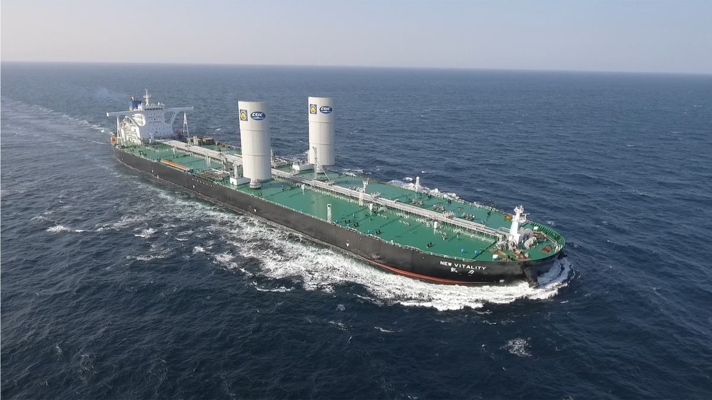
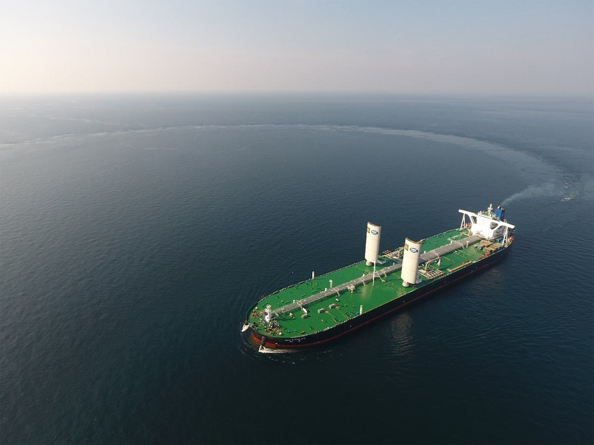
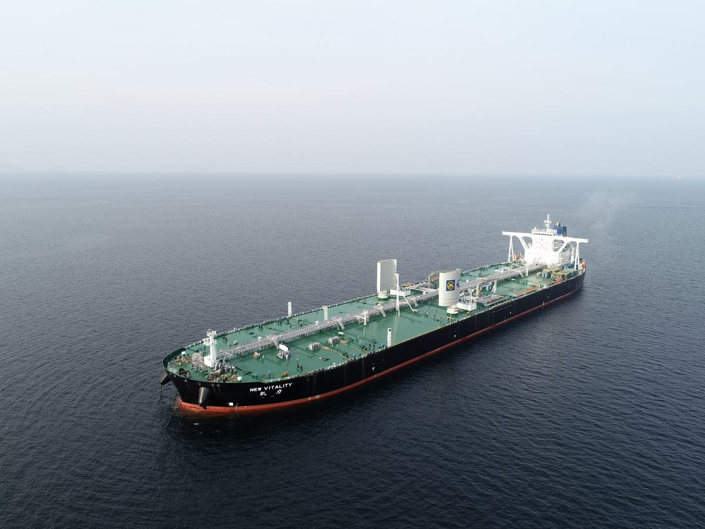

（1）设计目的：
翼型风帆节能装置在超大型原油船上的应用，实现风力助推大型船舶，减少主机油耗，对于促进创新大型船舶绿色节能技术，推动船舶行业主流产品转型升级，促进全行业技术进步和发展具有重要意义。
（2）设计创新：
1）针对空气动力学和水动力学在超大型原油船上的力学特性，首次提出了翼型升力帆助推技术理论模型；
2）采用数值计算与风洞模型试验相结合的方法，完成了风帆气动力设计及多方案的优化选型，开发了优于现行风帆截面设计、最大升力系数可达3.0的U型独立风翼剖面，有效风向利用角高达320°；
3）提出了风浪载荷耦合方法，首次开发了超大风帆助推设备结构大挠度、非线性的安全评估技术，解决了在随机载荷作用下大型柔性结构的强度、刚度和疲劳评估难题，创新性提出兼顾效率与安全的评估衡准；
4）针对船舶总纵、稳性、避碰、驾驶视野、雷达盲区、危险区、防爆、消防、直升机起降等多种因素，首次提出了总体设计工程化应用解决方案，突破了船-帆界面设计的难题；
5）针对复杂性海洋气象条件下风帆操作的难题，制定了风帆升降的操帆控制策略，开发了可根据风向调整风帆旋转角度、实现助推力最大化的自适应控制系统；
6）根据风洞与水动力试验以及实船示范应用，获取了风力矩阵以及消耗矩阵，计算完成了船舶能效指数，实现了对IMO MEPC.1/Circ.815通函风帆船EEDI计算方法的完善。
（3）设计价值：
该船经过近两年多的营运使用，节能效果显著，实测数据所记录的一对风帆在不同装载、航速、风速下，平均节能为5%以上；针对不同大型商船，定制安装多对风帆，预期可获得16-30%的节能效果。经济和社会效益显著，推广应用前景广阔。
国际首艘“翼型风帆助推”超大型原油船的成功示范，标志着由大船集团牵头的国内研发团队成功掌握了翼型风帆研发、设计、制造与应用关键技术，填补了国际空白，为抢占未来船舶技术制高点，保持市场竞争优势创造了有利条件。“翼型风帆助推VLCC”荣获了2020年中国优秀工业设计奖金奖。
针对国际公约对船舶节能环保的新要求，结合当前船舶节能技术的发展水平，以超大型油船（VLCC）为目标船型，通过对风帆—主机混合动力推进技术的研究，掌握风帆设计、制造与应用关键技术，实现风帆在大型油船上的示范应用。
（1）翼型升力帆助推技术理论模型的建立
以对称翼型、襟翼翼型为母型，开展了系列风帆剖面设计及气动力分析；在此基础上提出了U型风机剖面方案；然后，分别对对称翼型、襟翼翼型、U型风帆剖面进行了优化设计，提出了各剖面形式中升力特性较优的外形方案。
理论U型风帆剖面厚度较薄，不利于风帆机械系统的布置。以风帆的工程化应用为目的，基于外形简洁的独立剖面翼型形式为基础，通过剖面气动力几何外形优化设计，提出一种综合性能优异的U型风帆剖面方案。
（2）风帆气动力设计及多方案优化选型
1）风帆船航行性能CFD预报技术
通过对甲板气流场及气动力特性进行计算及多帆耦合非定常气流场数值分析，并将数值预报结果与试验结果进行对比，验证了CFD预报技术的可靠性和精度。
自航因子数值模拟包括不同进速系数下的螺旋桨敞水性征进行CDF分析、实船阻力计算分析，并与试验外推结果进行比较，验证了数值预报方法的可行性和可靠性。采用叠模的方法进行风帆船实船自航计算，结合螺旋桨敞水曲线以及实船阻力计算结果，采用等推力法得到了实船的各项自航因子。
2）风帆船综合航行性能模型试验技术
项目研究内容包括风帆船自航模操纵性试验技术和风帆船耐波性水池试验技术。
风帆船自航模操纵性试验技术：基于几何相似、运动相似和部分动力相似原则，针对VLCC无帆及VLCC带帆开展不规则波中的回转试验，预报、评估船舶在波浪中的机动性；开展风浪联合作用下的Z形操纵试验，预报、评估船舶在波浪中的纠向和保持航向能力；开展波浪中的航向保持试验，评估船舶在波浪中航向保持能力。
风帆船耐波性水池试验技术：根据现有船舶耐波性试验技术，考虑风帆的作用特点，综合相似关系、风力模拟方法等手段，以开展设计航速、典型风浪条件下的风帆船的运动测试为目标，建立适用于风帆船的耐波性模型试验技术方案。在此基础上，针对VLCC风帆船压载和满载排水量状态进行了静水中横摇衰减试验、以及不同风帆方案的不规则波中运动响应试验，分析了风帆对船体耐波性的影响。
（3）船-帆界面总布置设计技术
1）满足风帆遮挡的总布置设计技术
a.本船风帆装置正常工作时，会对驾驶室可视范围形成遮挡。
b.在船舯桅增设后桅灯和将舷灯等移至风帆之前后，可以满足《1972国际海上避碰规则》的要求。
c.基于原船的雷达布置，安装风帆装置后，将因为帆面对雷达天线信号的遮挡，需要进行设计修以满足相关法规的要求。
d.在风帆装置的安装区域，有水灭火系统和固定式甲板泡沫灭火系统。由于帆面的宽度较大，可能在特定的工作角度时，形成对固定式灭火系统喷射灭火介质的阻挡和盲区，从而影响灭火效能。通过在风帆装置附近增设泡沫炮，来满足相关要求。
2）满足风帆风动力效应的总布置设计技术
a.对船舶结构的设计影响评估；
b.对完整稳性的影响评估；
c.对锚泊和系泊影响的评估；
d.对操舵系统影响的评估；
e.对船舶操纵性影响的评估；
f.对甲板直升机作业影响的评估。
（4）风帆控制策略及控制系统开发
基于VLCC风帆船航行性能研究成果，以风场特性、风帆气动力特性、船体上层建筑气动力特性为输入条件，以最佳节能效果为控制目标，兼顾船舶航行安全性,确定了风帆船气动力布局方案和风帆姿态控制形式，并最终建立了适用于不同船舶航速、风速的风帆控制策略,有效解决了风帆姿态与风场环境数据的匹配问题，实现了寻优控制和寻优推进。
针对风帆的控制问题，首次通过对翼形风帆推力特性的评估及风险点分析，提出了风帆船适用的风帆控制策略，通过风帆控制系统将控制策略反馈给执行结构完成相关动作，实现了通过风帆姿态控制实现保证船舶安全、最优推力的目标。包括风帆升起与收回控制策略、风帆转动控制策略
（5）风帆结构及船-帆界面船体结构安全性评估技术
对于安装大型风帆设备的船舶，将额外承受由风帆设备产生的风帆载荷。通过对《结构共同规范》、《船舶与海上设施起重设备规范》进行研究，确定了风帆船适用的规范及载荷计算方法，明确了强度评估的工况及校核衡准，并基于此完成了风帆结构及相关船体结构的屈服、屈曲、疲劳校核。
（6）风力助推装置节能效果评估和试验验证技术
航速、航线、风力、风向等各项参数均将对风帆节能效果产生影响。项目围绕风帆系统的节能指标，研究、制定了节能效果验证方法。通过对节能效果评估所需数据进行分析研究，明确了需要在试航阶段通过试验手段获取的参数，以及在试航过程中利用现有手段获得相关参数的方法，确定了试航期间的节能效果验证方法，编制了航海试验程序，为特定航线节能效果评估奠定了基础。基于试航中获得的试验数据确定了风帆船适用的试航数据处理方法。通过计算可知，未加装风帆的VLCC满足EEDI第一阶段要求，加装风帆后的VLCC可满足EEDI第二阶段要求。
根据前述确定的节能效果评估方法，基于宁波—中东航线上的风场数据，进行满载、压载工况下不同船舶航速的风帆推进功率计算，具体结果如下：
经评估，安装一对风帆样机的VLCC，以经济航速(12knot)营运于宁波—中东航线，满载与压载工况节能分别为7.8%和2.7%，对应日燃油消耗分别降低2.77吨和0.69吨。
创新点总结：
1）针对空气动力学和水动力学在VLCC上的力学特性，首次提出了翼型升力帆助推技术理论模型，解决了在大型油轮上高效利用风能的科技难题；
2）采用数值计算与风洞模型试验相结合的方法，完成了风帆气动力设计及多方案的优化选型，开发了优于现行风帆截面设计、最大升力系数可达3.0的U型独立风翼剖面，有效风向利用角高达320°；
3）针对船舶总纵、稳性、避碰、驾驶视野、雷达盲区、危险区、防爆、消防、直升机起降等多种因素，首次提出了总体设计工程化应用解决方案，突破了船-帆界面设计的难题，成功实现了工程示范；
4）针对复杂性海洋气象条件下风帆操作的难题，制定了风帆升降的操帆控制策略，开发了可根据风向调整风帆旋转角度、实现助推力最大化的自适应控制系统；
5）提出了风浪载荷耦合方法，首次开发了超大风帆助推设备结构大挠度、非线性的安全评估技术，解决了在随机载荷作用下大型柔性结构的强度、刚度和疲劳评估难题，创新性提出兼顾效率与安全的评估衡准；
6）根据风洞与水动力试验以及实船示范应用，获取了风力矩阵以及消耗矩阵，计算完成了船舶能效指数，实现了对IMO MEPC.1/Circ.815通函风帆船EEDI计算方法的完善，并在MEPC 74提出了中国政府提案。
知识产权情况：
该项目拥有多项自主知识产权，部分研究成果授权国家发明专利7项，受理9项，授权实用新型专利28项，登记软件著作权2项，代表中国政府在国际海事组织在第74界环保会上递交2份提案。



翼型风帆助推超大型原油船,风力助推绿色航运
风帆与船体的流体之美
航运节能减排,惠及环境与大众
超大型油轮节能改造,行业推广价值大
绿色航运的中国方案